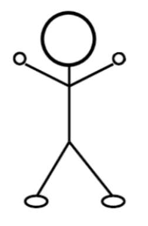
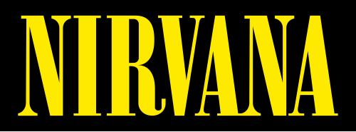
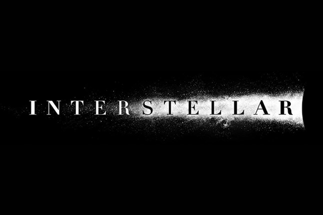

Persoonlijke informatie
- Volledige naam: Mauro Deloz
- Adres: Abeelseweg 5
- Telefoonnummer: 0123 45 67 89
- E-mailadres: maurodeloz@gmail.com
- Foto:

Hobby's
- Lopen: Proberen minstens 2 keer per week. Meer over Lopen
- Gitaar: Beginnen leren hoe je gitaar speelt. Leer gitaar
- Fietsen: Gaan mountainbiken. Meer over mountainbike routes
Interesses
-
Favoriete band: Nirvana

-
Favoriete film: Interstellar

Prognose
Tabel met voorspelde scores voor drie vakken uit de opleiding:
| Vak | Mauro | Medestudent 1 | Medestudent 2 | Medestudent 3 |
|---|---|---|---|---|
| Webdevelopment | 14/20 | 15/20 | 13/20 | 12/20 |
| Professional communication 3 | 15/20 | 13/20 | 15/20 | 14/20 |
| Pentesting | 12/20 | 13/20 | 12/20 | 13/20 |